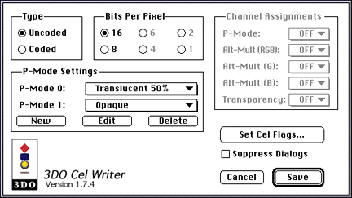
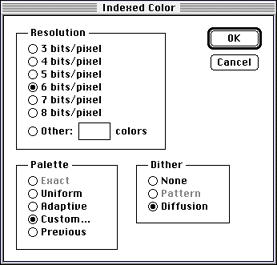
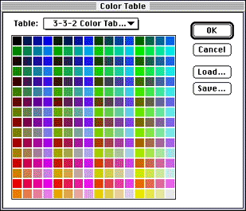

The CelWriter dialog appears.

Figure 1: 3DO CelWriter dialog.
If you started with 24-bit source art and choose 16 bits per pixel, the tool discards the bottom three bits in the red, green, and blue channels while it saves the cel. This may result in a color distortion of the cel.

Figure 2: Photoshop color conversion dialog.

Figure 3: Photoshop color table dialog.
Note: If you need more control over the color table, use the 3DO Animator tool instead.